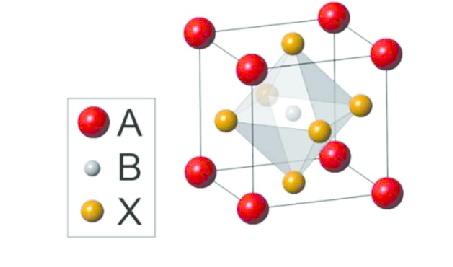
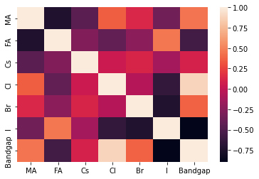
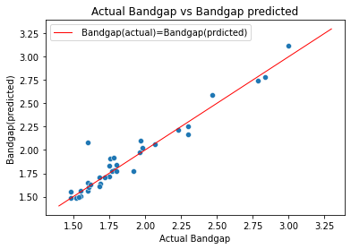
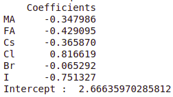
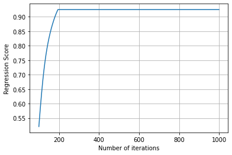
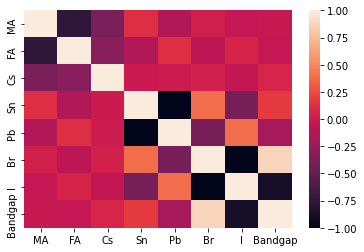
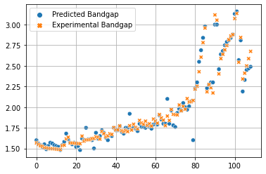
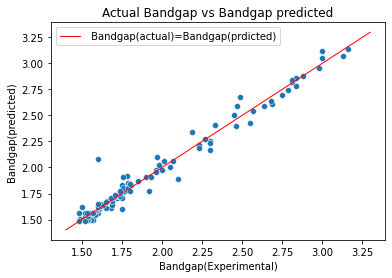

Search for a better perovskite solar cell using ML
Sharun P Shaji (1711125) Sreerag T K(1811158)
Project Proposal
Introduction
Solar cells are the future of energy, existing technology is based on silicon or germanium the so-called conventional semiconductors. They are
very hard to manufacture as well as it's very expensive to fabricate. Perovskite can replace this if we use
Perovskite instead of conventional semiconductors, it'll drastically reduce the effort for making solar cells.
The Perovskites are crystals with a specific crystal structure given by, $$ ABX_{3} $$
 A & B are cations, and
X is an anion. So, we can see that there can be an enormous number of combinations which yields a Perovskite crystal,
but it's impossible to try all these combinations are get the properties that we need.
In this project, we are concentrating on bandgap energy denoted by Eg , which determines the efficiency
of the solar cell, and the color of light emitted if used as a LED. We also want to find a substitute of Lead (Pb),
which is the B cation in most of the Perovskites we are using today. I think I don't need to explain why because we all
know that Pb is a heavy metal and the environmental issues it causes. On a side note, from the Perovskite solar cells,
the Pb which reaches the ground is not at all significant it's similar to how much Pb we will get exposed if we are
walking on an asphalt road barefoot. Hence finding Pb-free Perovskite is not an immediate goal.
Goals
Our main objective is to find the best possible combination of materials that makes a better
candidate for a Perovskite based solar cell or a LED . For this project, we are only concentrating on the solar
cell, if time permits we'll also work on the LED. To attain the main goal we have to complete
some milestones which are listed below,
Make a big enough data set by going through literature and the data used in some of the references (data set consists of properties of elements and Eg will
be the label
Find out which features to use. (feature engineering)
Train the machine to predict the label, which is Eg. (Neural Network and Linear regression)
Then try all possible combinations and come up with the closest to the desired value of Eg
By midway we are hoping we will be able to start on woking on training the machine to
perdict the Eg
Work Distribution
Data Collection and Data Preprocessing (Both)
Feature Engineering (Both)
Implementation of ML algorithms:
ANN (Sharun)
Linear Regression (Sreerag)
Project Reports and Website handling (Both)
For Training and Testing the data we will be focusing on two class of Algorithms, Linear Regression and Neural Networks. Here Neural Network(ANN) part will be done by Sharun and the Linear Regression part will be done by Sreerag. And and for the rest we will be doing them together
Expected Results
We are expecting that by the end of the project we will be able to to suggest a composition for the Perovskite material with desired value for the Bandgap energy.
Will repeat these procedures considering Perovskites excluding Pb as a constituent to suggest a substitute for Pb-based Perovskites
If time permits we will repeat this procedures considering LED instead of Solar cell.
Midway Report
Analysis of some reference papers which we have refered for this project
Bandgap tuning strategy by Cations and Halide ions of Lead halide perovskites
learned from Machine learning
Bandgap engineering or obtaining a material with desired bandgap value is a crucial step to
obtain pervoskite solar cells, which are stable and highly efficient. Here, in this paper by
Yaogao LI, Yao Lu and their group, they are proposing a way to use Machine Learing as tool
to determine how does the bandgap of the material is dependent on the composition of the
material thereby predict the composition of the material with desired bandgap value.
They used experimental datas of bandgaps of various compositions of perovskite crystals as
the training set for their ML algorithms and used linear regression and neural networks to
predict the bandgap values the test dataset. The class of perovskite crystal they
considered in their work Mixed Lead halide perovskites(APbX3, A is the cation, X is the
halide ion) and the reason for considering them in particular is their unique optical,
electrical and properties. By varying the composition of these crystals they have obtained the
data of perovskites with bandgap values ranging from 1.5 to 3.2 eV. Here the different
compositions of perovskite crystals are made by varying the compositions of the
cations(A) and anions(X) keeping the Lead composition fixed. Here for the cations(A),
they used Ca(Cesium), FA(formamidinium), MA(methylammonium) and for the anions(here halides)
,they used Cl, Br and I. The dataset of past reported experiments covers a large range of
compositions of perovskites, including pure Cl, pure Br, pure I, Br-I and Cl-Br mixed,
aiming to get a deep and correct relation among the composition of the lead halide
perovskite and its bandgap. The dataset they used contains more than 300 data points,
which covers more than 120 recently published research papers. Then for further
increasing the accuracy of their model, they screened their dataset reasonably.
In the screaning process they removed the duplicate datas present in the dataset and for
different experimental datas of the perovskite of same composition they considered only the
most frequently and recently reported experimental data.
After this screening process, the final dataset they obtained contained 109 datapoints.
Among this final dataset the maximum bandgap obtained was 3.16 eV for MAPbCl3 and minimum
bandgap obtained was 1.48 eV, which was for FAPbI3.
Application of different ML algorithms
They used three different ML algorithms to study about the correlation between bandgap
energy and the composition of the perovskite crystal. They are linear regression(LR),
neural network(NN) and random forest(RF). They chose ratios of Cs,FA,Cl and Br in the
perovskite crystal with formula CsaFAbMA(1−a−b)Pb(ClxBryI(1−x−y))3, as input features for
their models. So in total they had 4 input features and their output was the bandgap
value of the perovskite. For training and testing purpose they divided the data randomly
into 5 parts in which the the 4 parts(80%) were assigned for training and the remaining 1
part(20%) was assigned for testing. Then for checking the performance and accuracy of
their algorithms, they evaluated root mean square error(RMSE) and Pearson correlation on
their models. For all models, they obtained low RMSE values, indicating their high accuracy
in prediction and obtained high Pearson correlation(r value), which indicates that the
predicted values and the experimental values have strong correlation. Among the three
algorithms performance was maximum with LR and NN because of their low RMSE value as
compared to the RMSE value obtained from RF. And LR algorithm had an additional advantage
that they can be used to manually predict the bandgap of a perovskite crystal with unknown
composition and the model they obtained for that manual prediction purpose was(using LR),
For perovskite with the formula of CsaFAbMA(1−a−b)Pb (ClxBryI(1−x−y))3 ,they obtained the
Eg as,
$$ E_{g} = 1.587 − 0.039a − 0.102b + 1.543x + 0.669y $$
(This model was obtained from the regression coefficients of their LR model)
Identifying Pb-free perovskites for solar cells by machine learning
In this paper, the main goal is to find the lead-free perovskites using ML Density functional
theory (DFT). We all know the harmful effects of Lead, lead is used widely in Perovskites
because of the stability and desirable bandgap of lead-based perovskites.
In this research article they are generating data of double perovskites, that is they
have 2 types of atoms/molecules in B site, by first order DFT. The features are atomic properties
like Pauling’s electronegativity, ionization potential, highest occupied atomic level,
lowest unoccupied atomic level etc. of 540 hypothetical perovskites
They have used decision tree-based algorithm known as Gradient boosted Regression Tree (GBRT)
, which is prone to overfitting but GBRT is prevents this by gradient boosting method.
They have also taken Heat of formation into consideration because there is a direct
relationship between the heat of formation and the stability of the crystal
Major advantages
Since the data is generated using the DFT, we can train the model using a large data set
We can predict non-linear relations also where Linear Regression can't do a good job
there
The major drawbacks we face here is,
It’s very hard to get the data for organic molecules using DFT, and also the
first order DFT is not accurate enough.
We need the bandgap to be in the range of 1.1 – 1.8 eV and that corresponds to
approximately 0.3 - 0.8 eV an offset of 0.8 eV in the data generated. Which is less accurate that the MSE of
Linear Regression
We started by making the correlation matrix of the
data, the plot is given below,

Results from Linear Regression
The input features used were concentration of Cs, FA, MA, Cl, Br and I. So in total we used 6 input features and the output is the band gap energy of the crystal.
For seperating the whole data into Testing and Training, we used the ration 67:33(Train : Test). Then we obtained our result with low RMSE(Root Mean Square Error) (obtained as 0.10514968248985873 ), indicating their high accuracy in prediction and obtained high Pearson correlation (or) r value(obtained as 0.9263513280757425)which indicates that the predicted values and the experimental values have strong correlation.

And the corresponding Regression coefficients of the features and the intercept were obtained as,

Then the final model of predicting the Bandgap energy was obtained as,
$$E_{g} = 2.66635970285812 - 0.347986 MA - 0.429095 FA - 0.365870 Cs + 0.816619 Cl - 0.065292 Br - 0.751327 I$$
This model can be used to predict composition of Lead Halide Perovskite required to obtain a desired value of bandgap energy(within error
limits). Now if consider an LED, this bandgap energy is the parameter which determines the wavelength of light emitted from it.
So for that case, this model can used to predict composition of Lead Halide Perovskite which is required to make an LED which emits
wavelength of light of our interest(The practical construction such predicted composition of Perovskite can be possible, difficult or
in some cases even impossible. So practical construction/experimental verification is required to understand the practical feasibility of
such model predicted by the ML algorithm)
In this case also, we obtained our result with low RMSE(Root Mean Square Error) (obtained as 0.13380158533163938), indicating their high
accuracy in prediction and obtained high Pearson correlation (or) r value(obtained as 0.9246494649708933) which indicates that the
predicted values and the experimental values have strong correlation.

ANN Implimentation Code
Future Plans and Improvements
We have used all 6 concentrations as features but, we could have reduced the features to 4, that'll be implemented soon. The major update is
the addition data with Lead Tin mixtures at the B site which we have obtained from various literatures published, there are no published articles that we could find which has tried to find the
bandgaps of Lead-Tin halide using experimental data. The Lead-Tin mixture has shown some interesting anomalous properties, and it deviates
from the linear relationship, which might result in the poor performance of Linear Regression model. And there is a good chance in the
reduction of accuracy if consider the data as a whole, we are required to use Transductive learning here. We need to find an optimal way
to incorporate all these data as efficient as possible. And if time permits we'll also try to include data for efficiencies of solar cells, and try to predict the same.
Post-Midway Report
What we have implemented after midway
Reduced number of features from 6 to 4 and in the codes upto miday
Updated the dataset: Removed Cl and added data for Tin-Lead perovskite
In the Neural Network model reduced the number of hidden layers and changed to solver to lbfgs from adam
In addition to the Linear Regression and Neural Network models, we also implemented the Random Forest and Regression tree algorithms in the dataset
implemented Repeated K-Fold cross validation for the optimization of our training of models
In the Neural Network model, Used tabGAN to generate additional datapoints to our dataset(It was done for obtaining further improovement in our model), and used that update to train our model
Reduction in the no. of features
In the linear regression model, as we can see, the sum of concentration of cations and sum of concentration of anions should give us 1, hence we can remove one from each which gives the same results, hence we removed one concentration which is less correlated in the data we have, which were MA and Iodine. ,and the experessions will be related to the given emperical formula.
$$Cs_aFA_bMA_{(1−a−b)} Pb (Br_yI_{(1−y)})_3$$
Update on Dataset
We have added the data for Tin-Lead perovskite, which is a mixture in the B site of perovskite.The Tin-Lead perovskites have a much lower bandgap, which looks like an anomalous behavior, and it is not linear with concentration, and hence we avoided the linear regression model. And we also removed the Chlorine from our composition because with addition of Chlorine the bandgap was going much higher, which is not a desirable character for us. We collected data from various articles found online, and process of data collection was hence slow, and couldn’t make enough data to get a good prediction with our models.The emperical form of perovskites is
given below.
$$Cs_aFA_bMA_{(1−a−b)}Sn_j Pb_{i-j} (Br_yI_{(1−y)})_3$$

Correlation matrix for updated data
Updates on Neural Network
As we first implemented ANN with 100 hidden layers which tend to overfit the data and performed very bad in the test data, hence we changed the hidden layers and optimized all the parameters including the activation function, no. of epochs etc. And we also changed our solve from SGD based “Adam” to quasi-Newton based “LBFGS” which is unconventional but worked for us.
Implementation of new models
We implemented Random Forest and Regression tree algorithms and tried to fit our data with Tin-Lead perovskites, and we got satisfactory results, but it needed further improvement. Since we didn’t had a very huge dataset, the ideal partition of train and test data was necessary and we used Repeated K-fold validation to find the optimum division of test and train data and our results was much better after that.
GANs a short introduction
As mentioned above, the process of acquiring data for training the models was a tedious process, and we were able to get only 101 data points, which is not enough to train the models. Hence, we wanted to make more data, here is the role of GANs which stands for Generative Adversarial Network. This idea is relatively new, this was proposed in 2014 by Ian Goodfellow and his colleagues. Now a days there are so many controversies and restrictions on the usage of GANs because it is so good in generating face of people.
The GAN consist of two deep learning neural networks named as generative and discriminative networks. What happens in this framework is, these 2 neural networks is playing a game know as zero sum game in game theory, which essentially means one gain is other’s loss (Extreme Competition!).
The generative network tries to make candidates with same statistics as the data we give, and the discriminator tries to reject those candidates, as the process repeats the generative model will come up with better and better candidates so that the discriminator can’t differentiate the original data and the data generated by generative network
Results from each model we have implemented
Linear Regression
Linear Regression for Lead only perovskites(Using 4 fetures instead of 6)


$$RMSE(obtained) : 0.1052021325418953 I$$
The expression we got as a result from linear regression is given below
The ability to predict the bandgaps will give us a vision about the desired composition.
In this study we have used the perovskites with a wide bandgap, those which can be used as a
solar cell and LED depended on the bandgap. In this study the major hurdle we faced was the
lack of large amount of data, since the area of study is not much explored by the way we
have proceed. And we fulfilled most of our targets as proposed in our presentations
We have implemented various machine learning algorithms and the most accurate one was
Random Forest, with very less amount of data, using repeated K-fold cross validation we able
to get excellent result from the Random Forest algorithm. The linear regression was only used
in the Lead only perovskite because of the non-linearity we observed from the data, from
linear regression we got an empirical formula for the bandgap. We have implemented neural
network with and without Tin, and in Tin-Lead perovskite when we trained with the data we
collected the results were not as good as we expected, the same was with the Regression Tree
algorithm.
We have collected data from various sources, especially for Tin-Lead perovskites there were no previous publication which used the experimental data to derive at the result, which means our study is one of the first! Since we lacked data, we have come up with a very innovative solution, that is to use GANs to generate data from the data we have collected, and we trained it using the generated data and we tested it with the original data(experimental data) and we have got a much-improved result as you can see from the results given above.
With all our models except linear regression we are able to make prediction in the outlier regions where there is a sudden dip in the bandgap, for which there are no published articles as of now.